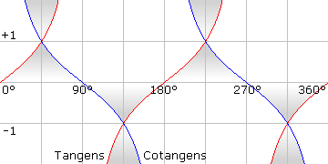

Hilfe


Parameter
| Zahl1# | Beliebige Floatzahl |
Rückgabewert
Winkel eines Tangenswertes in Grad. Die Grafik zeigt den Zusammenhang zwischen Winkel und Tangens-Wert.

Beschreibung
Diese Funktion berechnet den Winkel aus einem Tangenswert. Es ist somit die Umkehrfunktion für Tangens. Mathematiker nennen es Arcustangens.
Man kann den Tangenswert ausrechnen, indem man die Gegenkathete eines rechtwinkligen Dreiecks durch die Ankathete teilt. Kotangens rechnet man aus, indem man die Ankathete durch die Gegenkathete teil. Aus diesem Wert wird danach der Winkel berechnet.
Zur Erklärung: Gegenkathete ist die Seite des Dreiecks, die gegenüber dem gesuchten Winkel liegt. Ankathete ist dagegen neben dem Winkel.

Allerdings sind nicht alle Winkel im Umkreis von 0 bis 360° möglich. Erst durch logische und mathematische Überlegungen ist es trotzdem möglich. Um sich diesen Vorgang zu ersparen gibt es in BlitzBasic die Funktion ATan2 .
.
Beispiel
Demonstiert die Verwendung von ATan
x=0
y=0
xSpeed#=Rand(3)
ySpeed#=Rand(3)
While Not KeyHit(1) Or y>480 Or x>640
Cls
Rect x,y,10,10,1
x=x+xSpeed
y=y+yspeed
Text 0,0,ATan(yspeed/xspeed)
Flip
Wend
Siehe auch